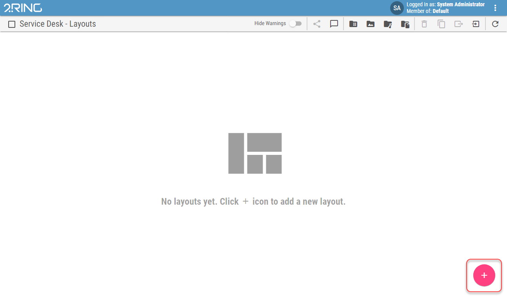

Editing a Layout¶
All of the information below also applies to the widget.
Layout’s Edit mode can be accessed in one of two ways:
Click the icon in the Layout list at the bottom right side of the screen to create and edit a new Layout.
Figure 1: Add button
Click the pen icon located at the top right side of the screen, while viewing a specific Layout to edit it.
Figure 2: Edit button
When the aforementioned buttons are not present, the current logged-in user lacks sufficient permissions to access the Edit Mode.
While in Edit Mode, the displayed Layout cannot be viewed in Full Screen mode.
When the Edit mode is entered, a panel, also called the Layout panel, is automatically opened containing the following options:
Figure 3: Layout panel
- Name
The name of the Layout. The name is displayed in the Layout list and as the header of the viewed Layout.
- Description
Optional description of the Layout, displayed in the Layout list.
- Refresh Interval
Inheritable
Interval in seconds, between each refresh of the Layout’s data
- Appearance
The style of the Layout
- Aspect Ratio
Inheritable
Ratio of Layout dimensions, at which the Layout is displayed. If unlocked is selected, Layout will fit the browser’s window size.
- Custom Aspect Ratio
Only if Custom is selected as an Aspect Ratio
Custom aspect ratio in X:Y format.
- Theme
Inheritable
Visual theme, applied to all segments in the Layout.
- Theme Overrides…
Selected theme can be customized for current layout by overriding any of its properties. For list of all properties, see ../administration-tool-guide/business-units/themes chapter.
Customized theme can then be saved as a new theme for current Business Unit by clicking the button and selecting a name.
- Background Type
Inheritable
Type of the background.
- Background Color
Inheritable
Only if Solid Color is selected as a Background Type
For more information see Color field section.
Color of the background.
- Background Image
Inheritable
Only if Image is selected as a Background Type
Image of the background.
- Short URL
The Short URL allows the use of a shortened link, which can be used for sharing and easy navigation to the Layout.
- Token
Uniquely generated string which is used in Short URL address. When a new token is generated and published, previous Short URL will no longer be usable.
- Anonymous Access
Allows navigation to the Layout, without the need to login first. Affects only a direct navigation using the Short URL.
- Fullscreen
Controls, if the Layout should be put into the full screen mode, after being accessed with the Short URL.
- Show Toolbar
Controls, if the Layout should contain the navigation controls. Hiding navigation controls means that navigation to Layout list is unavailable. Affects only a Layout, accessed using the Short URL.
- Segments
Manually orderable
List of Layout’s segments. For more information about Layout segment see Editing a Segment chapter.
- Shared Calculations
After creating a calculation on the layout/widget, it can serve as a predefined calculation and can be choosen in segments supporting layout calculations such as KPI or Pie Chart. For more information about editing calculation, see Editing Shared Calculations chapter.
- Default Calculation Parameters
Default Calculation Parameters allow the user to predefine calculation parameters for the entire Layout. These parameters are then automatically applied to all newly created calculations (those that are supported by calculation type). Automatically added parameters can be manually overridden on each individual calculation. For more information see editing-layout/editing-calculation-based-segments/editing-scalar-valued-calculations/parameters chapter.